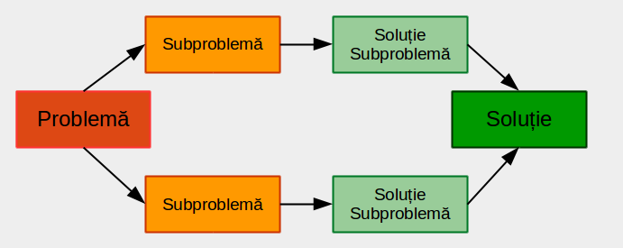

Divide et Impera este o metodă de programare bazată pe un principiu simplu:
Subproblemele trebuie să fie de același tip cu problema inițială, ele urmând a fi rezolvate prin aceeași tehnică.
Subproblemele în care se descompun problema dată trebuie să fie:

În tehnica Divide et Impera, în urma împărțirilor succesive în subprobleme, se ajunge în situația că problema curentă nu mai poate fi
împărțită în subprobleme. O asemenea problemă se numește problemă elementară și se rezolvă în alt mod – de regulă foarte
simplu.
Divide et Impera admite de regulă o implementare recursivă – rezolvarea problemei constă în rezolvarea unor subprobleme de
același tip. Un algoritm pseudocod care descrie metoda este:
Algoritm DivImp(P)
Dacă P este problemă elementară
R <- RezolvăDirect(P)
Altfel
[P1,P2] <- Descompune(P)
R1 <- DivImp(P1)
R2 <- DivImp(P2)
R <- Combină(R1,R2)
SfârșitDacă
SfârșitAlgoritm
Fie un vector V cu n elemente întregi, indexate de la 1 la n. Să se determine suma lor.
int Suma(int V[], int st, int dr) { if(st == dr) return V[st]; // problemă elementară else { int m = (st + dr) / 2; // împărțim problema în subprobleme int s1 = Suma(V, st, m); // rezolvăm prima subproblemă int s2 = Suma(V, m + 1, dr); // rezolvăm a doua subproblemă return s1 + s2; // combinăm rezultatele } } int main() { int V[101], n; //citire n si V cout << Suma(V,1,n); return 0; }